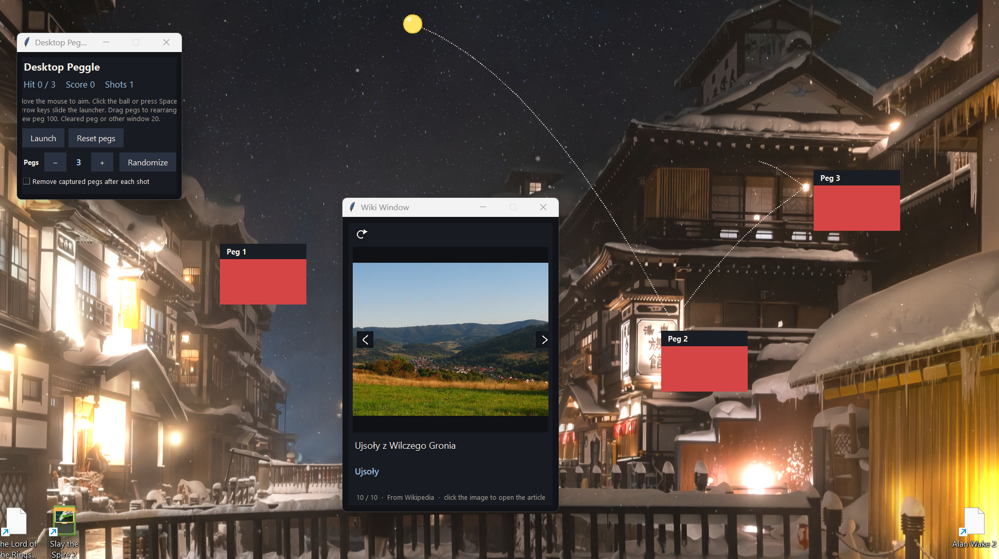

Alphabet Soup Game
Full featured game developed in Unity. Enjoy a unique experience for every letter of the alphabet in a short but inventive 2D platforming adventure.
{{name}}
Things I've built or contributed to.
Full featured game developed in Unity. Enjoy a unique experience for every letter of the alphabet in a short but inventive 2D platforming adventure.
A collection of small projects that sit on your desktop and interact with the rest of your active windows. Play peggle, enjoy a slideshow across the breadth of wikipedia, or build yourself a line of dominos and knock them down.

A collection of applications I've written for the sake of improving my job search. Includes tools for both local newspaper and wider job board filtering using token and keyword filters

A collection of micro-games and scenes of various type and scale developed in Unity. Includes a collection of 2D and 3D games, using a full suite of Unity features.

A collection of smaller games developed in Godot. Includes mostly smaller 2D games, using a full suite of Godot features.
A simple simulator for BGP routing policies.
School policy requires private repo- no link available, but feel free to reach out for more details!